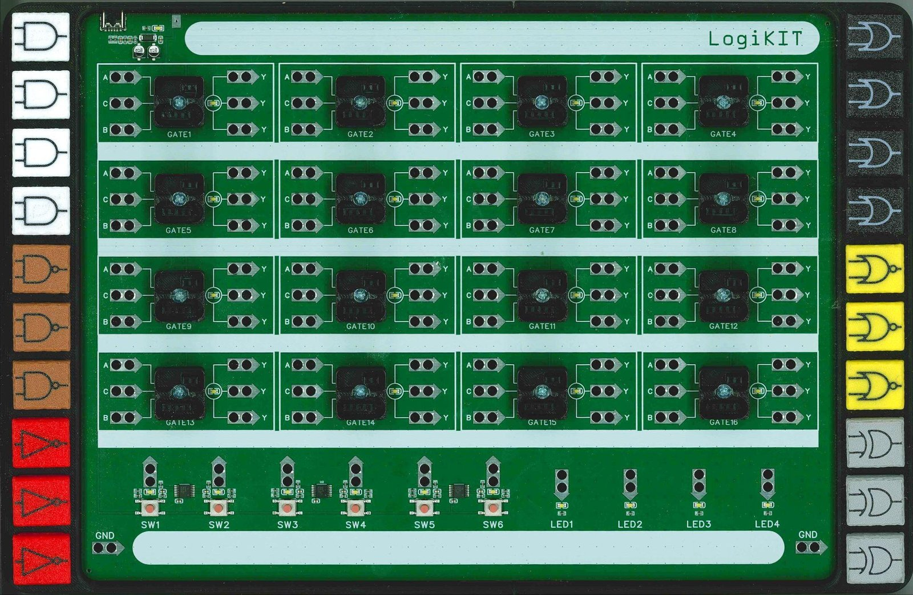

// LogiKIT review · Inside a gate · The faulty gate

In Labs 1 and 2 you plugged gate modules into the sockets and wired them up. Each module was a black box: you knew its truth table, but not what was inside.
Take the transistor switch from the last two lessons and read the collector as the output. A pull-up resistor connects it to 5 V.
A = 1: the transistor saturates and pulls the output down to about 0.2 V. Y = 0.
A = 0: the transistor is in cutoff, and the pull-up holds the output at 5 V. Y = 1.
The output is always the opposite of the input. One transistor and two resistors make a NOT gate.
Now use two transistor switches on the top side, between +5 V and the output. A pull-down resistor holds the output at 0 V until a closed path connects it to 5 V.
A = 1, B = 0: Q1 closes, but Q2 is still open. There is no path to 5 V, so Y = 0.
A = 1, B = 1: both switches close in series and complete the path. Y = 1 only in this row: an AND gate.
Put the two top-side switches side by side, in parallel. Each switch has its own path from 5 V to the output.
A = 0, B = 0: both switches are open, and the pull-down holds the output low. Y = 0.
A = 0, B = 1: Q2 alone completes a path. Either closed switch makes Y = 1: an OR gate.
Move the series switches to the bottom, between the output and ground, with a pull-up on top like the NOT gate. A complete path now pulls the output down.
A = 1, B = 1: both switches close and connect the output to ground. That row is the only 0, the AND pattern flipped: a NAND gate.
A transistor on the top side cannot lift the output all the way to 5 V, because its emitter stays about 0.7 V below its base. Bottom switches pull down cleanly, so gate chips often build NAND and add a NOT to make AND.
Move the parallel switches to the bottom too. Now either closed switch completes a path through the switches and pulls the output down.
A = 1, B = 0: Q1 alone pulls the output down. Y is 1 only when A and B are both 0: a NOR gate, the OR pattern flipped.
Series switches behave like AND, and parallel switches behave like OR. Moving the switches to the bottom flips the output.
Build the NOT gate: a 1 kΩ pull-up from +5 V to the collector, the emitter to ground, and a 10 kΩ base resistor.
Join the LogiKIT GND to your breadboard ground. Feed the base resistor from a LogiKIT switch.
Measure the output for each input. Wire the same switch to a LogiKIT NOT module and compare its LED.
Your teacher assigns NAND (series) or NOR (parallel). Build it with two switches and compare it with that module.
Feed your gate's output into your NOT gate. Which gate do you have now?
Draw your transistor gate's schematic, then fill in this table for it. A voltage above about 2.5 V counts as 1.
| A | B | Transistor Vout | Transistor Y | LogiKIT LED | Match? |
|---|---|---|---|---|---|
| 0 | 0 | ___ | ___ | ___ | ___ |
| 0 | 1 | ___ | ___ | ___ | ___ |
| 1 | 0 | ___ | ___ | ___ | ___ |
| 1 | 1 | ___ | ___ | ___ | ___ |
Using the words path through the transistors and pull-up, explain why your gate gives a 0 in the rows where it does.
A LogiKIT module does the job you just did on the breadboard, but on a small integrated circuit: transistors and their connections built together on one piece of silicon.
One gate from 1 or 2 transistors and a couple of resistors.
Several gates on one chip about the size of a fingernail.
More than 10 billion transistors on a chip smaller than a postage stamp.
Modern chips use a different kind of transistor, the MOSFET, in pairs that pull the output up or down, but the idea is same: switches that open or close a path. The next lesson shows how they are built.
This breadboard gate is supposed to be a transistor NAND: the build sheet calls for the circuit you used in the Gate Builder. Something on the board does not match the build sheet, and the gate no longer follows the NAND truth table. You have 10 minutes of bench time.
Fill the table. Click A and B on the schematic. Checking rows is free.
Probe. Click a test point (TP) to measure it at the current inputs: 1 minute.
Diagnose. Strike the causes your readings rule out. Choose the cause and the fix.
Read the record. Did you find the reading that settles it?
Transistor switches with a pull-up or a pull-down. Switches in series make AND and NAND, and switches in parallel make OR and NOR.
Fill the truth table first: the wrong rows tell you where to look. Then measure the voltage that tells look-alike faults apart.